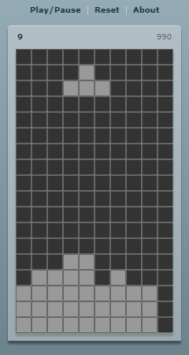
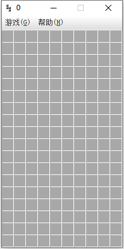
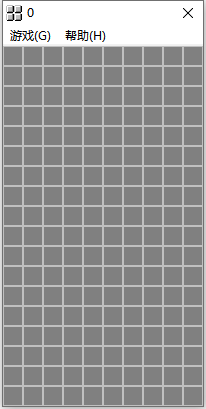
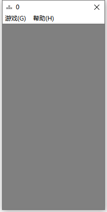
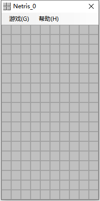
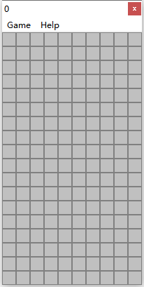

我的首个自创算法——俄罗斯方块
2000年10月24日
最早是在大连培训的时候，VB6开发出一个半成品，用按钮编组做游戏显示界面，只有16个样式。后来经反复琢磨，扩展到全部25个样式，用三维数组存储数据，并形成标准算法。因历史原因，最早的VB源码已丢失，现存最早的是用BCB5实现的，后来移植到Java和.Net平台，并形成更优化的代码。接下来，又先后发展出Delphi7、Flex、MFC（VC6）、WinAPI（MinGW/TCC）等版本。
Flex SDK 4.6

Java

C++ Builder 6.0 by VCL

Visual C++ 6.0 by MFC

C# .Net 2.0 SDK

C & WinAPI（GCC / TCC编译器）可直接运行脚本
